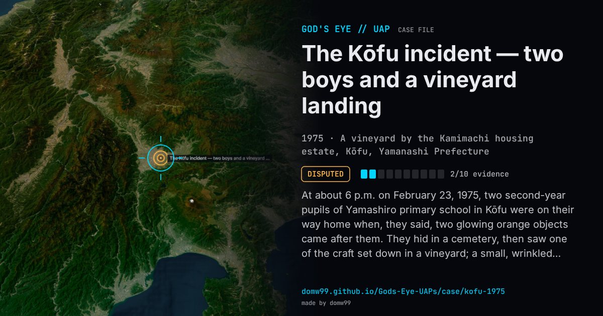

The Kōfu incident — two boys and a vineyard landing

At about 6 p.m. on February 23, 1975, two second-year pupils of Yamashiro primary school in Kōfu were on their way home when, they said, two glowing orange objects came after them. They hid in a cemetery, then saw one of the craft set down in a vineyard; a small, wrinkled, chocolate-brown figure came out, and one boy felt it tap him on the shoulder and collapsed. The other carried him off and fetched their families, who arrived to find something glowing in the vineyard. One mother said she saw a silver object turning in the sky; a caretaker at the city’s environment centre said he saw a light over the area. With the help of the Yamanashi Nichinichi newspaper, investigators found broken concrete posts, a spread wire net and holes in the ground. It became one of Japan’s best-known UFO cases; in 2025 Kōfu marked its fiftieth anniversary with events in the city.
Explanation
It rests on two seven-year-olds, and the marks are doubtful: concrete vine posts were broken but the vines themselves were untouched, and a craft of the size described could not have fitted between the posts. Some locals suspected a prank, or a story grown in the family; the reports of radioactivity at the site come from a local schoolteacher and were never confirmed.
What was seen
Shape: An orange, glowing craft; a small being with wrinkled, chocolate-brown skin and no clear face
Witnesses: Two second-year schoolboys, cousins; the mother of one, who said she saw a silver object turning in the sky; the caretaker of the city’s environment centre
Duration: Minutes
Sources
- Wikipedia (Japanese) — 甲府事件 (the Kōfu incident)
- Tokyo Weekender — Japan’s UFO tourism destinations
- GIGAZINE — a model of the Kōfu alien for the 50th anniversary (2025)
Browse
- Japan
- 1970s
- Disputed
- Close encounters
- Many independent witnesses
- Physical traces
- Lights and fireballs